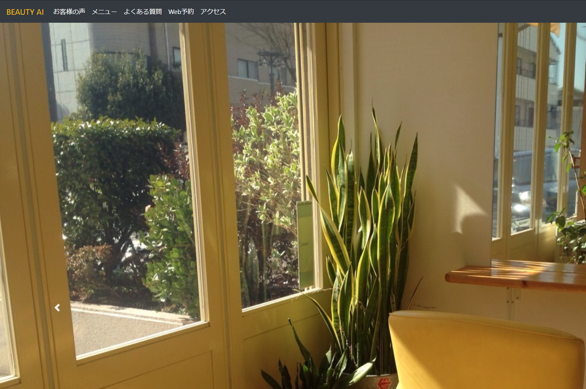
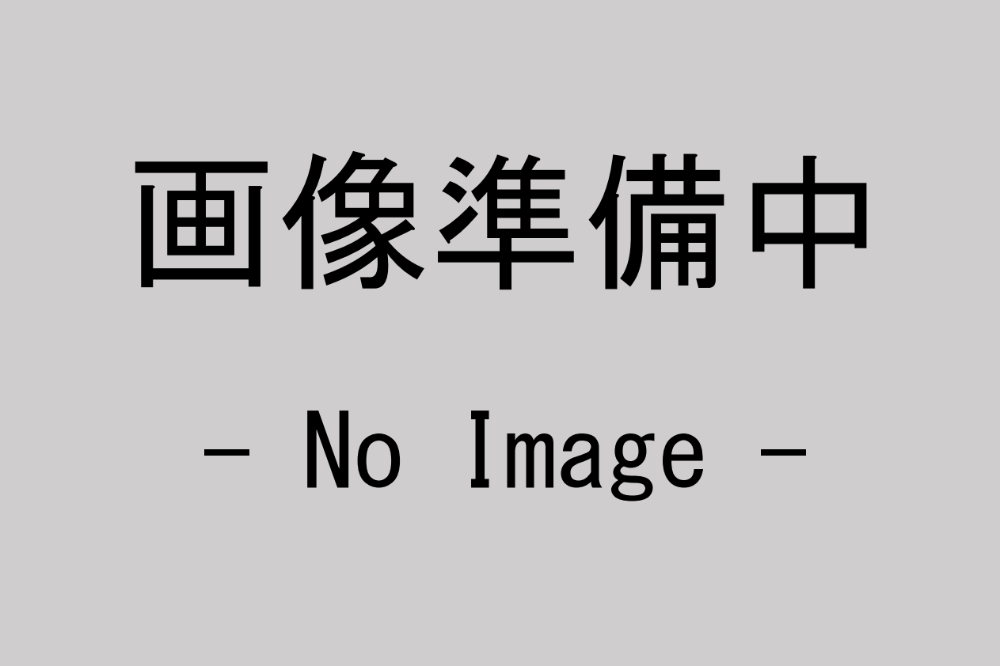
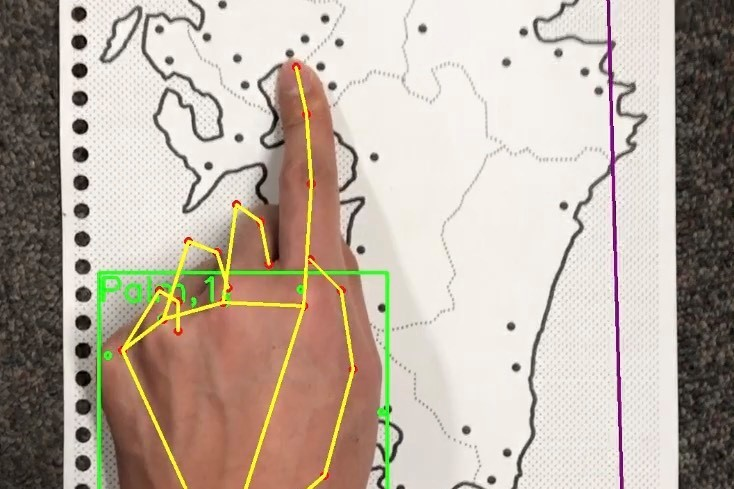

Tetsushi Miwa is a master of Nagoya Institute of Technology, with experience developing Web and iOS applications. His applications make our lives more convenient.
私が大学時代に力を入れたことは、英語プレゼンコンテストです。英語能力と、、、

私が大学時代に力を入れたことは、大学が主催している工場長養成塾のTAです、、、

現在専攻している学科を選んだ理由は、工場の経営に興味があったからです。、、、

視覚障害者向けのiOS版学習アプリケーションの開発を行っています。iPhone、、、
「何事もまずはやってみる」ということを大切にしています。大学4年生のと、、、
私の強みは「主体性」です。小学4年から大学3年の12年間、サッカー部に所、、、
私の弱みは「人を頼りにすることが苦手なこと」です。何事もとりあえず自分、、、
これまでの人生で最も困難だと感じた経験は国際学会でのオーラル発表です。、、、
Back to top
© 2020 TETSUSHI MIWA
プライバシーポリシー